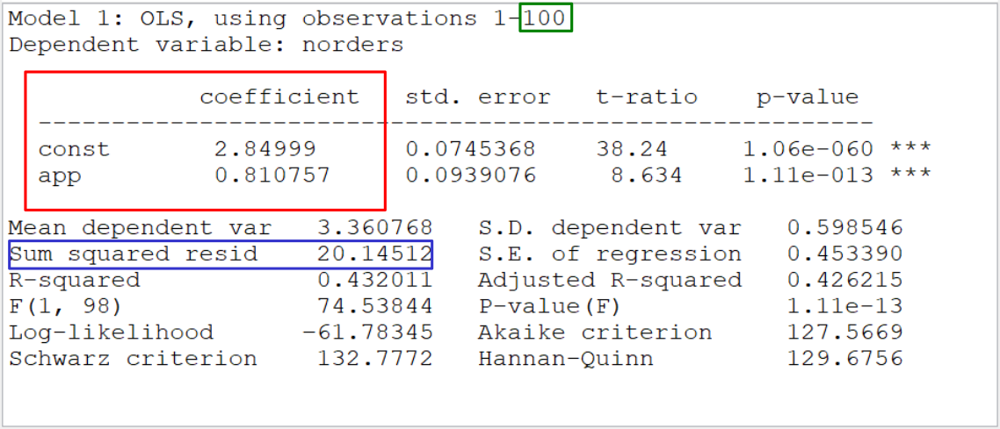
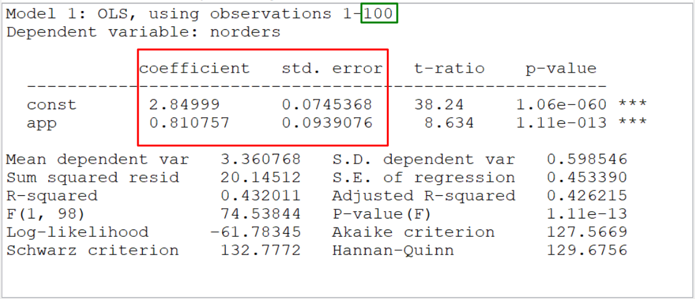
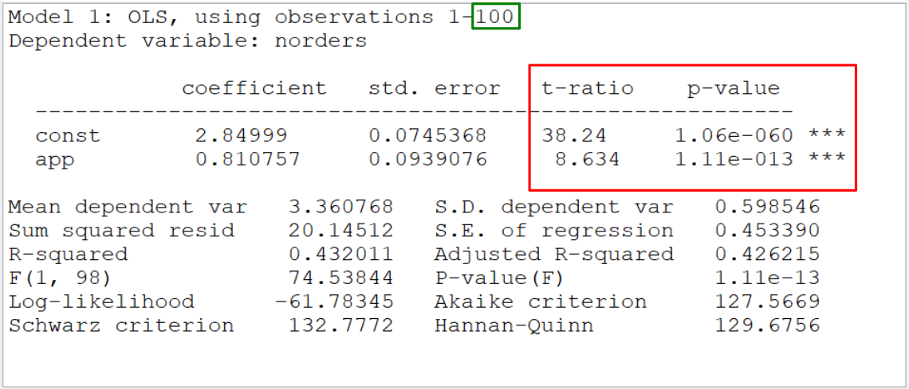
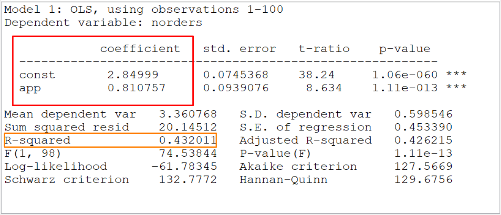
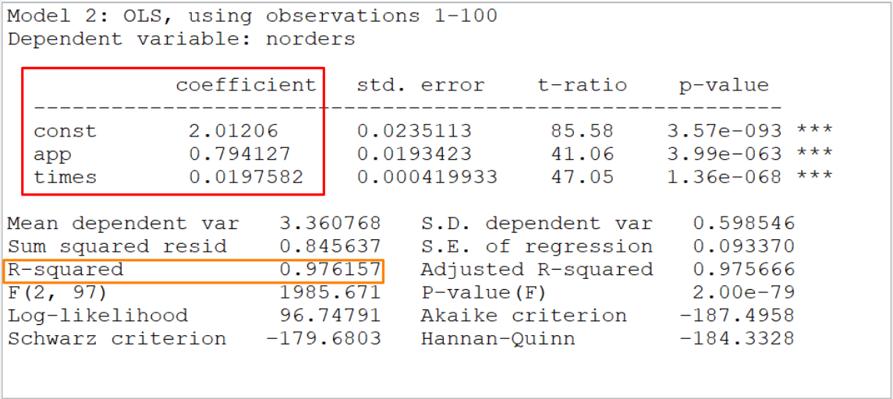

Chapter 7 Regression analysis
Now we can apply both interval estimation techniques and hypothesis testing in the context of linear regression.
In this chapter we will learn:
- How to analyze the linear regression model from a probabilistic perspective,
- how to carry out interval estimation or hypothesis testing for the coefficients and
- how to make a prediction..
7.1 Linear regression model from descriptive Statistics
For two metric features, \(Y\) and \(X\), the following relationship postulates linear regression model: \[\begin{equation*} Y=\alpha + \beta X. \end{equation*}\]
Given \(n\) observations \((y_i,x_i)\), \(i=1,\ldots, n\), (of two features \(Y\) and \(X\)) the following system of equations is set up: \[\begin{equation*} y_i = \alpha + \beta\, x_i + \varepsilon_i,\quad i=1,\ldots, n, \end{equation*}\] where \(\varepsilon_1, \ldots, \varepsilon_n\) are error terms, which are chosen so that equality applies.
The coefficients \(\alpha\) and \(\beta\) are calculated using the method of least squares, which is determined by: \[\begin{equation*} \sum_{i=1}^n \varepsilon_i^2 = \sum_{i=1}^n (y_i - (\alpha+\beta\, x_i))^2 \quad\rightarrow\quad \text{minimum}. \end{equation*}\]
Example 7.1 (Forecasting the number of orders) We have already seen, that app usage and number of orders are positively associated to each other (see example 2.5) Plus we have a strong feeling, that time spent in shop could be a driver for the number of orders. So now we would like to forecast the average number of orders in the next six months using the information on app usage and time spend in shop via a linear regression model:
\[Y\approx \alpha + \beta X,\]
where \(Y\) is the average number of orders, \(\alpha\) and \(\beta\) are some numbers, and \(X\) contains a binary variable for the app usage (with values eighter \(0\) (no app) or \(1\) (app)) and the time spent in shop.
If we can estimate \(\alpha\) and \(\beta\) from the data, we would be able to compute \(Y\) from knowing just \(X.\) So before a customer makes some product orders, we can forecast their number, if we know whether this customer uses the app or not and what is his/her average time spent in shop. 😎
7.2 Simple linear regression from a probabilistic perspective
In the following, we extend this purely data-based view to a probabilistic setting with dependent variable \(Y\) and error \(\varepsilon\) being random variables with certain properties.
We start with a simple (or univariate) linear regression model, where the following relationship between a dependent random variable \(Y\) and a single independent (random) variable \(X\) applies: \[\begin{equation*} Y_i = \alpha + \beta\, x_i + \varepsilon_i, \quad i=1,\ldots, n, \end{equation*}\]
where
\(Y_1,\ldots, Y_n\): observable metric random variable, aka dependent variable;
\(x_1,\ldots, x_n\): given deterministic values (or Realizations of a RV \(X\)), aka regressor or independent variable;
\(\varepsilon_1, \ldots, \varepsilon_n\): error terms, unobservable RV’s that are independent and identically distributed with \(\mathbb E(\varepsilon_i)=0\), \(\text{Var}(\varepsilon_i)=\sigma^2\). (In the case of a stochastic regressor, the assumptions apply over \(\varepsilon_i\) then only conditionally, so \(\mathbb E(\varepsilon_i|X_i=x_i)=0\), etc.)
The regression coefficients \(\alpha,\beta\) and the variance of the error terms \(\sigma^2\) are unknown parameters which have to be estimated from the data \((y_i,x_i)\), \(i=1,\ldots, n.\)
It holds: \[\begin{align} \mathbb E(Y_i) &= \mathbb E(\alpha + \beta x_i + \varepsilon_i) = \alpha + \beta x_i\\ \text{Var}(Y_i) &= \text{Var}(\alpha + \beta x_i + \varepsilon) = \sigma^2. \end{align}\]
Statements about distributions of estimators and test statistics, also for small \(n\), is obtained by the following - stronger - assumption.
- Normal distribution assumption: \[\begin{equation*} \varepsilon_i \sim N(0,\sigma^2),\quad i=1,\ldots,n, \end{equation*}\] and \[\begin{equation*} Y_i\sim N(\alpha+ \beta x_i,\sigma^2), \quad i=1,\ldots,n. \end{equation*}\]
7.3 Estimating, testing and forecasting
In the following we will deal with the following aspects of linear regression model:
- Point and interval estimation of the unknown parameters \(\alpha\), \(\beta\), \(\sigma^2\)
- Testing hypotheses about the regression coefficients \(\alpha\), \(\beta\)
- Prediction of target variable \(Y\) for a new value of \(x\)
7.3.1 Estimating the parameters of a linear regression model
As for the distributional parameters in the previous chapters, we can conduct point and interval estimation in the linear regression setup.
7.3.1.1 Points estimators
Parameter estimation is conducted via the ordinary Least Squares method (OLS) The idea of the method is: Determine \(\hat\alpha\) and \(\hat\beta\) such that \[\begin{equation*} \sum_{i=1}^n (Y_i-\alpha-\beta x_i)^2 \quad\rightarrow\quad \min_{\alpha,\beta} \end{equation*}\]
Minimizing the objective above, results in: \[\begin{align*} \hat\beta &= \frac{\sum _{i=1}^n (x_i-\overline x) (Y_i-\overline Y)} {\sum_{i=1}^n (x_i-\overline x)^2} = \hat\rho _{XY} \frac{\hat\sigma_Y}{\hat\sigma_X},\\[5pt] \hat\alpha &= \overline Y-\hat\beta \overline x,\\[5pt] \hat\sigma^2&= \frac{1}{n-2} \sum_{i=1}^n \hat\varepsilon_i^2 = \frac{1}{n-2} \sum_{i=1}^n (Y_i-\hat\alpha - \hat\beta x_i)^2, \end{align*}\] with residuals \(\hat\varepsilon_i=Y_i-\hat Y_i\) and fitted values \(\hat Y_i=\hat\alpha + \hat\beta\, x_i\), \(i=1,\ldots, n\).
Note that \(\hat\alpha\), \(\hat\beta\) and \(\hat\sigma^2\) expression depend on random variables \(Y_1,\ldots, Y_n\), therefore, they are themselves random estimation functions.
These are unbiased: \[\begin{equation*} \mathbb E(\hat\alpha)=\alpha, \quad \mathbb E(\hat\beta)=\beta, \quad \mathbb E(\hat\sigma^2)=\sigma^2, \end{equation*}\]
For the variance estimation the following applies: \[\begin{align*} \text{Var}(\hat\alpha) &= \sigma_{\hat\alpha}^2 = \sigma^2 \frac{\sum x_i^2} {n\left(\sum x_i^2 - n\overline x^2\right)}\\ \text{Var}(\hat\beta) &= \sigma_{\hat\beta}^2 = \frac{\sigma^2} {\sum x_i^2 - n\overline x^2} \end{align*}\]
Since \(\sum (x_i-\overline x)^2\rightarrow\infty\) for \(n\rightarrow\infty\), the estimators are also consistent.
- Under the normal distribution assumption: \[\begin{equation*} \varepsilon_i \sim N(0,\sigma^2), \quad Y_i\sim N(\alpha+\beta x_i, \sigma^2), \quad \hat\alpha \sim N(\alpha, \sigma_{\hat\alpha}^2), \quad \hat\beta\sim N(\beta, \sigma_{\hat\beta}^2). \end{equation*}\]
Returning to our example 7.1:
Example 7.2 (Forecasting number of orders) Now we use historical data on the amount of orders and the information on app usage to estimate the parameters of the linear relationship assumed.
The output of running a linear regression in gretl is:

We see, that the estimates are (\(\color{green}{n=100}\)):
\[\hat\alpha=2.85 \leadsto \text{const}\]
and
\[\hat\beta=0.8108\leadsto \text{app}.\]
The estimated residual standard deviation can be deduced from the sum of squared residuals (\(\sum_{i=1}^n\hat\varepsilon_i^2\)), contained in the output, as:
\[\hat \sigma_\varepsilon = \sqrt{\frac{\color{blue}{\sum_{i=1}^n\hat\varepsilon_i^2}}{\color{green}{n}-2}} = \sqrt{\frac{\color{blue}{20.14512}}{98}}=0.4534.\]
7.3.1.2 Interval estimators
Under the normal distribution assumption, we have: \[\begin{equation*} \frac{\hat\alpha-\alpha}{\hat\sigma_{\hat\alpha}} \sim t(n-2), \quad \frac{\hat\beta-\beta}{\hat\sigma_{\hat\beta}} \sim t(n-2). \end{equation*}\]
\(\leadsto\) Confidence intervals for \(\alpha\) and \(\beta\) \[\begin{equation*} \hat\alpha \pm \hat\sigma_{\hat\alpha} \, t_{1-\alpha/2}(n-2),\quad \hat\beta \pm \hat\sigma_{\hat\beta}\, t_{1-\alpha/2}(n-2). \end{equation*}\]
For \(n>30\) the \(t\) quantiles can be replaced by \(N(0,1)\) quantiles be replaced. If the normal distribution assumption is not met, the above results apply approximately for sufficiently large \(n\).
Example 7.3 (Forecasting number of orders) For our linear model in example 7.2, we can confidence intervall for the coefficients based on the results returned.

- \(95\%\CI for \(\hat\alpha\) (\(\color{green}{n=100}\)): )-CI for \(\hat\alpha\) (\(n=100\)):
\[[2.85 - t_{0.975, 98}\cdot 0.0745; 2.85 + t_{0.975, 98}\cdot 0.0745] = [2.7021; 2.9979]\]
- \(95\%\)-CI for \(\hat\beta\) (\(n=100\)):
\[[0.8108 - t_{0.975, 99}\cdot 0.0939; 0.8108 + t_{0.975, 99}\cdot 0.0939] = [0.6244; 0.9971]\]
7.3.2 Testing in linear regression model
Note that in our model, we assume that there is a linear relationship between the dependent and the independent variables. However, this assumption may not be fulfilled. If there is no linear relationship, then \(\beta=0.\) However, the resulting estimate of \(\beta\) may be different from zero, just because of random fluctuations. So, our first task is to check, whether the coefficients of the linear regression model are significant in the sense, that they are significantly different from zero.
The so-called significance tests allow us to do that.
The pair of hypotheses is of particular importance \[\begin{equation*} H_0: \beta=0, \quad H_1:\beta\not=0. \end{equation*}\]
Here, \(H_0:\beta=0\) means that \(Y_i=\alpha +\varepsilon_i\), \(i=1,\ldots, n\), actually applies, and therefore \(X\) none has explanatory value for \(Y\).
The relevant test type is the \(t\)-test.The \(t\)-test should be used to test the Hypotheses regarding \(\alpha\) and \(\alpha_0\), or \(\beta\) and \(\beta_0\).
- The test statistics are: \[\begin{equation*} T_{\alpha_0} = \frac{\hat\alpha - \alpha_0}{\hat\sigma_{\hat\alpha}},\quad T_{\beta_0} = \frac{\hat\beta- \beta_0} {\hat\sigma_{\hat\beta}}. \end{equation*}\]
Statistical program packages typically provide the \(t\) values and \(p\) values to the hypotheses \(H_0:\alpha=\alpha_0\) or \(H_0:\beta=\beta_0\) with \(\alpha_0=0\) and \(\beta_0=0\).
This shows whether the inclusion of \(\alpha\), or \(\beta\) makes sense in the regression equation.
Example 7.4 (Forecasting number of orders) For our linear model in example 7.2, we can conduct significance testing based on the results returned.

Since both \(p\)-values are very small (scientific notation), we reject the Null hypothesis of zero coefficients. Of course, we can also use the \(t\)-values (the \(t\)-ratio) and check whether they lie in the rejection region instead.
Besides the significance tests, also other hypothesis can be tested using the results. For example, we could test, whether the obtained \(\beta\) is significantly smaller than \(1.\)
Example 7.5 (Forecasting number of orders) For our linear model in example 7.2, we can test the hypothesis whether the obtained \(\beta\) is significantly smaller than \(1.\) based on the results returned.
Hypothesis: \(H_0: \beta=1\) vs \(H_1: \beta<1\)
Test statistics value: \[t=\frac{0.8108 - 1}{0.0939} = -2.0152\]
\(p\)-value: \[\mathbb P(T>|t|) = 0.0233\]
So we reject \(H_0\) on the singificance level of \(5\%.\)
7.4 Forecast in linear regression models
Forecasting aims at finding a point estimate to a new value \(x_0\): \[\begin{equation*} \hat y_0 = \hat\alpha + \hat\beta x_0. \end{equation*}\]
The quality of the model (and its forecast) can be assessed by \(R^2\). The so-called coefficient of determination \(R^2\) gives the relative proportion the variance of the sample \((y_1,\ldots, y_n)\), which is explained by the regression.
In the case of linear regression, it is defined as \[\begin{equation*} R^2 = 1-\frac{\sum_{i=1}^n (Y_i - \hat \alpha -\hat \beta x_i)^2} {\sum _{i=1}^n(Y_i-\overline Y)^2}. \end{equation*}\]
One can show that \[\begin{equation*} R^2 = \frac{\hat\beta^2 \hat\sigma_x^2}{\hat\sigma_y^2} = \frac{\hat\rho_{xy}^2 \, \hat\sigma_y^2}{\hat\sigma_y^2} = \hat\rho _{xy}^2. \end{equation*}\]
It holds \(0\leq R^2\leq 1\), where \(R^2=0\) the uncorrelated case, and \(R^2=1\) the case of a perfect linear relationship between the features \(X\) and \(Y\).
Example 7.5 (Forecasting number of orders) Let us take a look on the output of running a linear regression is from example 7.1 again.

Now we have a formula for forecasting the average amount of orders using the information on app usage:
\[norders \approx 2.85 + 0.8108\cdot app.\]
Using the result above, we can now forecast the average amount of orders depending on whether a customer uses the app or not.
- for an app user, we have:
\[norders \approx 2.85 + 0.8108\cdot 1 = 3.6607.\]
- for a web user, we have:
\[norders \approx 2.85 + 0.8108\cdot 0 = 2.85.\]
With our model, we explained a fairly large proportion \({43.2\%}\) of the variation in the number of orders data as indicated by \(\color{orange}{R^2}\).
7.5 Multivariate linear regression
Using Univariate linear regression (only one explanatory variable) we found a functional relationship between the sales \(U\) and the average temperature \(T\).
Can we take other influences into account (time spend in online shop)?
Multivariate linear regression:
Approach: \(y=b_0 + b_1\, x_1 + b_2\, x_2 + \cdots + b_L\, x_L,\)
with the regressand or dependent variable \(y\) and \(L\) regressors \(x_1, \ldots, x_L\) (multivariate regression);
Sample:
\[ ((x_{11}, \ldots, x_{L1}), y_1), \ldots, ((x_{1n}, \ldots, x_{Ln}), y_n) \]
- System of linear equations:
\[\begin{align*} y_1 &= b_0 + b_1\, x_{11} + b_2\, x_{21} + \cdots + b_L\, x_{L1} + \varepsilon_1\\ \vdots\\ y_n &= b_0+ b_1\, x_{1n} + b_2\, x_{2n} + \cdots + b_L\, x_{Ln} + \varepsilon_n \end{align*}\]
- Representation in matrix form:
\[ \bf{y} = \bf{X}\bf{b} + \bf{\varepsilon}, \]
with the design matrix
\[ \bf{X}= \begin{pmatrix} 1 & x_{11} & x_{21} & \cdots & x_{L1}\\ \vdots & \vdots & \vdots & & \vdots\\ 1 & x_{1n} & x_{2n} & \cdots & x_{Ln} \end{pmatrix} \]
- OLS-Solution:
\[ \bf{b} = (\bf{X}^T \bf{X})^{-1}\, \bf{X}^T\, \bf{y} \]
Example 7.6 (Forecasting number of orders) example 7.1 cont.
Design matrix \(\bf X\) with columns:
- constant (vector of ones),
- app indicator,
- time spend in shop
\[\bf{X} = \begin{pmatrix} 1&1 & 41.80\\ 1&1 & 21.16\\ 1&1 & 26.89\\ 1&0 & 51.89\\ 1&0 & 61.99\\ \ldots & \ldots &\ldots\\ \\ \end{pmatrix}\]
- OLS-Solution: \[\begin{align*} \beta&=(\bf{X}^\top \bf{X})^{-1}\, \bf{X}^\top\, \bf{Y} \end{align*}\]

Function to forecast the number of orders: \[norders\approx 2.0121 + 0.7941\cdot app + 0.0198\cdot times.\]
Which number of order would you forecast for an app user with \(41.8\) minutes spend in shop?
\(\%\)